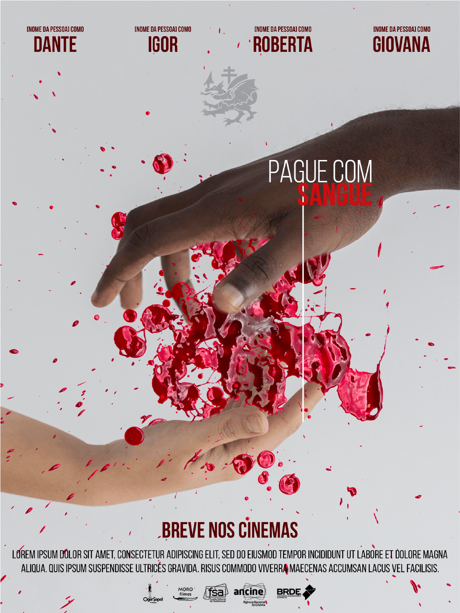

Pela perspectiva do departamento de arte de uma obra audiovisual, a ideia desse trabalho é criar todos os elementos que compõem a identidade de um terror moderno com vampiros aristocratas, intitulado "Pague com Sangue" (roteiro de Lucas Satolo). O filme envolve questões políticas e um drama interno do protagonista que debate assuntos recorrentes, como a luta de classes e discussões envolvendo o movimento LGBTQIA+. Para essa etapa, foram desenvolvidos cartazes apresentando o ritmo e o clima encontrado no filme, trazendo algumas ideias de diferentes pontos de vista.
Esta versão foi a escolhida por não ser tão soturna - o que ajuda a expressar que este não é somente mais um filme de terror - e já trás um pouco sobre a relação do personagem principal e a família de vampiros com quem ele se envolve: o sangue sai da mão negra para a mão branca de forma fluida e não violenta - o que remete ao “encantamento” vindo da família de antagonistas (sem deixar claro se ele é a grande vítima ou não).
Confira o projeto completo em alta resolução no meu behance.